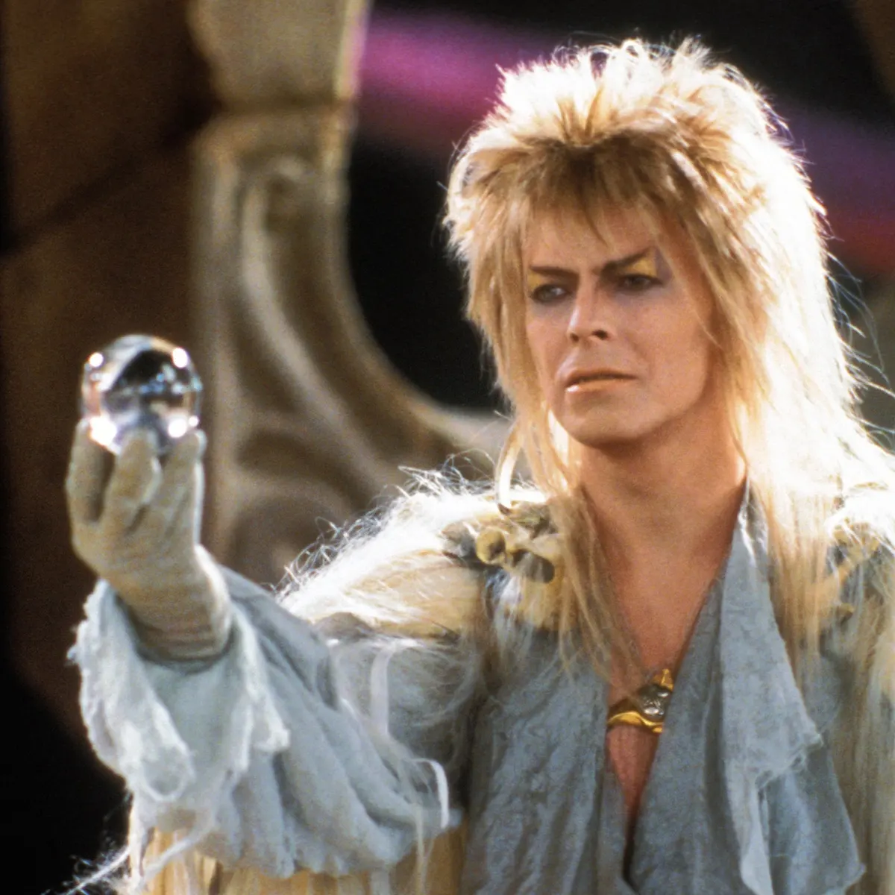

![]()

Why am I writing a blog?
Two reasons.
It forms part of a lab manual (of sorts). It saves time re-saying things to SoBA-lab people or anyone else that cares to listen.
Open science. Why not make stuff open? Then other folks can benefit and I can benefit from feedback.
What will I blog about?
Boring stuff, like:
Reproducibility.
Meta-science.
Cognitive neuroscience.
Data analysis.
And inspirational stuff, like:
Why should you read this blog?
You shouldn’t - it will be a boring blog. Please go and do other things.
Why is the blog called Chasing Rainbows?
For a long time, I just didn’t trust a lot of what I was hearing at conferences or reading in journal articles. I’m naturally skeptical (and maybe even a little cynical, at times). But I had no proof to substantiate my distrust. And I’m an evidence-based scientist after all, so I remained quietly concerned at the back of the conference room.
Then came the emprirical evidence in 2015. Reproducibility in leading psychology journals was between 25% and 50%. Not so good. Similar issues have emerged in a range of other fields, including human neuroscience (e.g., Button et al., 2013; Marek et al., 2022).
This evidence supported my instinct that a large proportion of psychological science and human neuroscience research had been unwittingly chasing rainbows, pissing in the wind or engaging in Cargo Cult Science.
I particularly like the idea of Cargo Cult Science from Richard Feynman in 1974. Michael Hanlon (2013) summarises Feynman’s observation nicely:
Feynman called things that looked like science but are not, ‘Cargo Cult Science’, after the cults that emerged on some South Pacific islands after the Second World War. The islanders had watched planes coming into land, and noticed that this was often accompanied by the appearance of valuable commodities from the outside world. So they built runways, control towers even, out of sticks and stones. But of course no planes came into land.
On first glance, this may seem like a far-fetched comparison to make towards modern science, with all the notions of serious scientists in white lab coats making groundbreaking innovations. But dig a little deeper and I’m not so sure. I think the observation remains profound and is even more relevant today than it was in 1974.
It is not that most researchers, including myself, intentionally used questionable research practices to produce unreliable research. Rather, the entire research ecosystem was setup in such a way that it inadvertently rewarded the production of unreliable research. We had the appearance of being scientists by wearing the right clothes, but we were working with the wrong tools and in the wrong environment.
This blog will be about small ways that we can try to avoid chasing rainbows.
Hungry for more?
Then read my blog post with Emily about our lab’s efforts to embrace open science.
Citation
BibTeX citation:
@online{ramsey2023,
author = {Ramsey, Richard},
title = {A Blog about (Not) Chasing Rainbows},
date = {2023-05-10},
url = {https://rich-ramsey.com/posts/2023-05-10_chasing_rainbows_intro},
langid = {en}
}
For attribution, please cite this work as:
Ramsey, Richard. 2023. “A Blog about (Not) Chasing
Rainbows.” May 10, 2023. https://rich-ramsey.com/posts/2023-05-10_chasing_rainbows_intro.